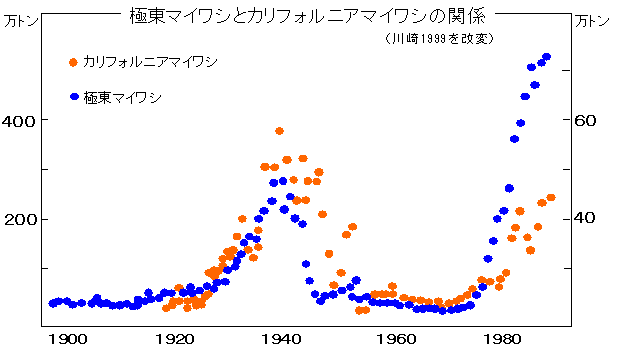

（２）マイワシ資源（太平洋系群）と海洋環境との関係
１）極東マイワシとカリフォルニアマイワシ
極東マイワシとカリフォルニアマイワシ（米国西岸水域に分布回遊するマイワシの一種）の漁獲傾向は概ね一致した変動を示しています。このことは、北太平洋に共通した大規模な環境変動と関係があると考えられます。

[前ページ] [次ページ] [1] [2] [3] [4] [5] [6] [7] 8 [9] [10] [11] [12] [13] [14] [15] [16] [17]